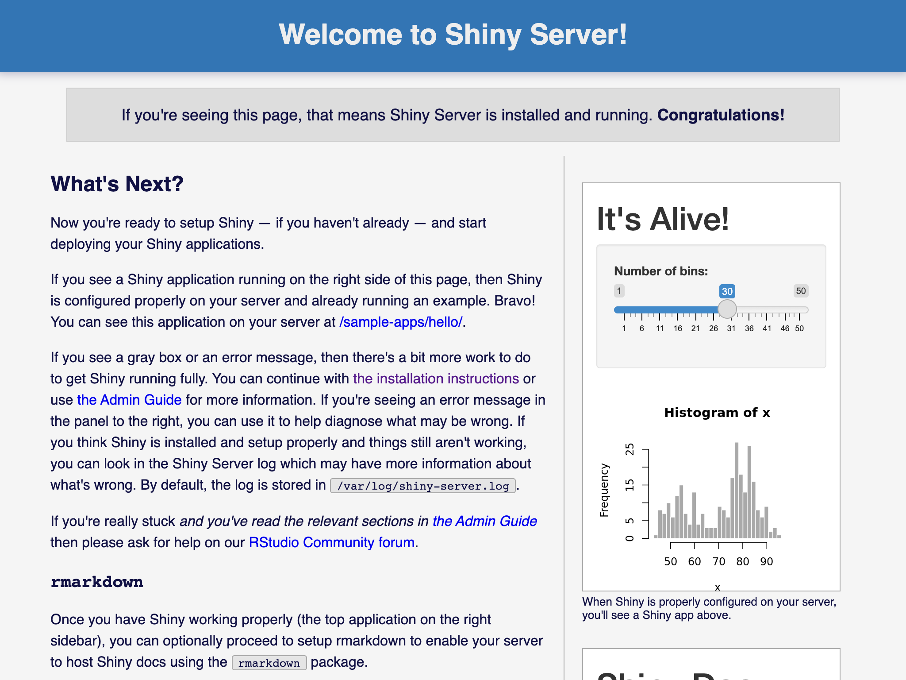

4.4 RShiny Server
Step 1 — 安裝 RShiny Server
sudo su - \
-c "R -e \"install.packages('shiny', repos='https://cran.rstudio.com/')\""cd /tmp && \
wget https://download3.rstudio.org/ubuntu-14.04/x86_64/shiny-server-1.5.16.958-amd64.debsha256sum shiny-server-1.5.16.958-amd64.deb sudo gdebi shiny-server-1.5.16.958-amd64.deb版本

右下角 blablabla 沒裝 rmarkdown package
Step 2 — 設定 Apache 的 Proxy
sudo vim /etc/apache2/sites-available/asis.conf<VirtualHost *:80>
[...]
###
# RStudio Proxy
###
[...]
###
# RShiny Server Proxy
###
RedirectMatch permanent ^/shiny$ /shiny/
RewriteCond %{HTTP:Upgrade} =websocket
RewriteRule /shiny/(.*) ws://localhost:3838/$1 [P,L]
RewriteCond %{HTTP:Upgrade} !=websocket
RewriteRule /shiny/(.*) http://localhost:3838/$1 [P,L]
ProxyPass /shiny/ http://localhost:3838/
ProxyPassReverse /shiny/ http://localhost:3838/
</VirtualHost>http://<虛擬主機的 ip 地址>/shiny/Step 3 — Shiny Server 進階設定
sudo vim /etc/shiny-server/shiny-server.conf# 主要執行 App 為的使用者為該 App 的擁有者，沒有擁有者的 App 將由備取使用者 shiny 執行。
run_as :HOME_USER: shiny;
access_log /var/log/shiny-server/access.log tiny;
server {
listen 3838;
# 110.09.21 跟明輝老師的結果是只留下 '老師' 與 '學生群組'
#
# # 重新導向舊群組 /asisstuc 至新群組 /asis
# location /asisstuc {
# redirect "https://<虛擬主機 ip 位址>/shiny/asis/" 302 true;
# }
#
# location /asis {
# user_dirs;
# members_of asis;
# directory_index on;
# }
#
# location /ecofin {
# user_dirs;
# members_of ecofin;
# directory_index on;
# }
#
# location /fta {
# user_dirs;
# members_of fta;
# directory_index on;
# }
# 重新導向舊群組 /asisstuc 至學生群組 /stu
location /asisstuc {
redirect "https://<虛擬主機 ip 位址>/shiny/stu/" 302 true;
}
location /defstu {
redirect "https://<虛擬主機 ip 位址>/shiny/stu/" 302 true;
}
location /asisstuc {
redirect "https://<虛擬主機 ip 位址>/shiny/stu/" 302 true;
}
location /stu {
user_dirs;
members_of stu;
directory_index on;
}
location /teacher {
user_dirs;
members_of teacher;
directory_index off;
}
# Shiny 首頁
location / {
site_dir /srv/shiny-server;
log_dir /var/log/shiny-server;
directory_index on;
}
}sudo systemctl restart shiny-server這裏要先跳至第四步先建立使用者群組後再重新啟動 Shiny-server。因為設定檔中設有使用者群組（asis、ecofin、fta、teacher），如果 Shiny Server 在啟動中找不到時會跳出錯誤。
Step 4 — 使用使用者測試設定是否有效
sudo groupadd asissudo groupadd ecofinsudo groupadd ftasudo groupadd teachersudo vim /etc/default/useradd# Default values for useradd(8)
#
# The SHELL variable specifies the default login shell on your
# system.
# Similar to DSHELL in adduser. However, we use "sh" here because
# useradd is a low level utility and should be as general
# as possible
SHELL=/usr/bin/bash # 變更這裡sudo mkdir /etc/skel/ShinyApps/sudo ln -s /srv/shiny-server/sample-apps \
/etc/skel/ShinyApps/examplesudo useradd --badnames -N -g asis -m 08170875--badnames:-N, --no-user-group:-g, --gid GROUP:-m, --create-home:
sudo useradd --badnames -N -g ecofin -m 08220000